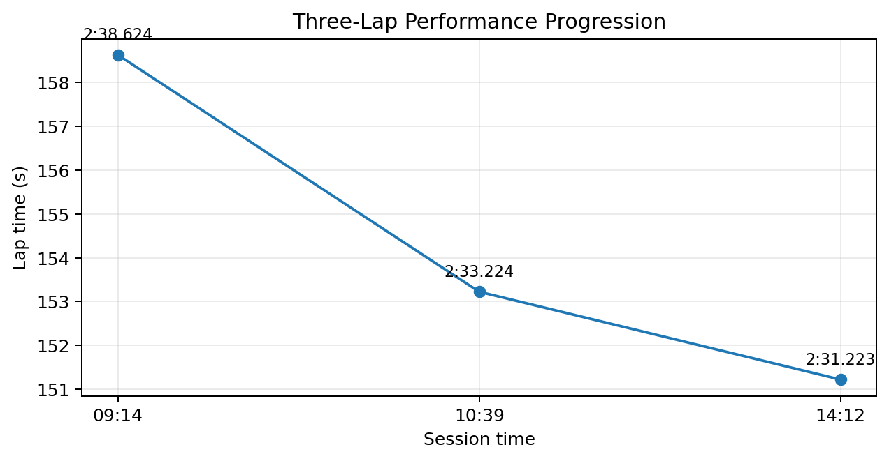
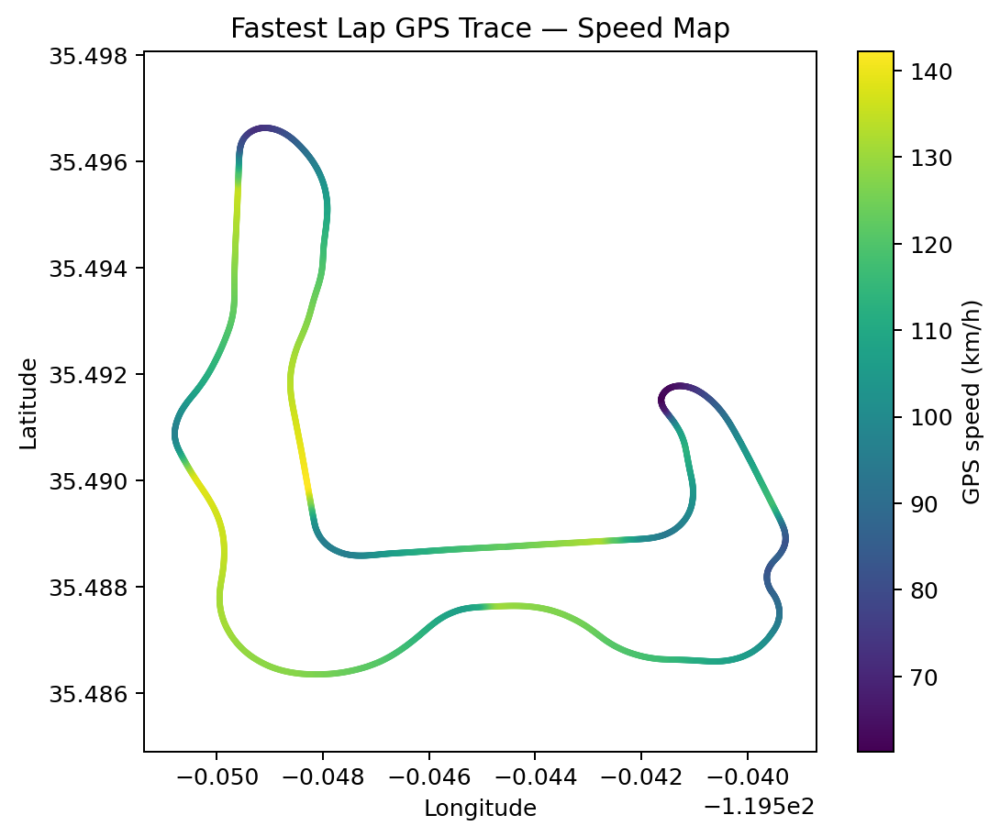
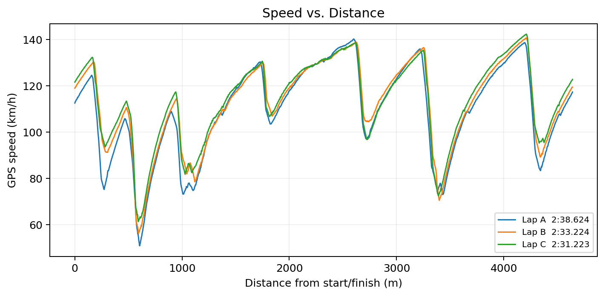
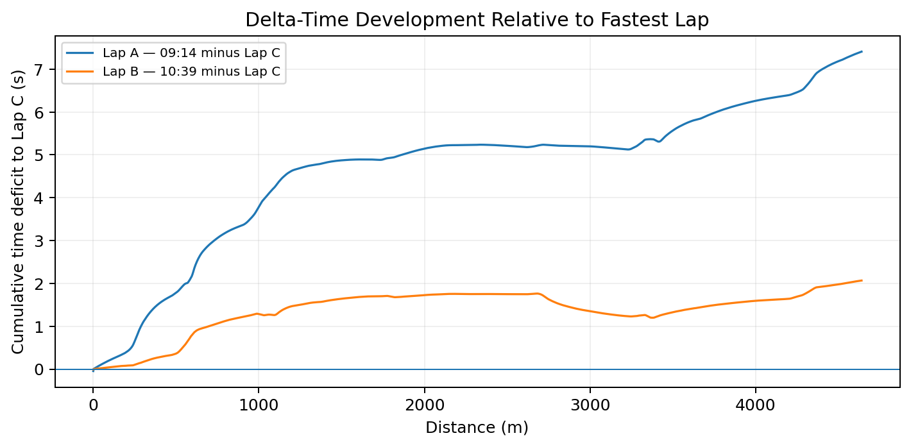
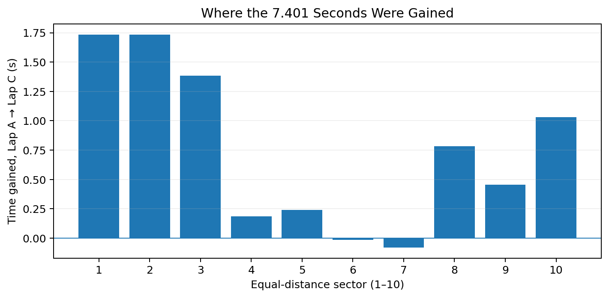
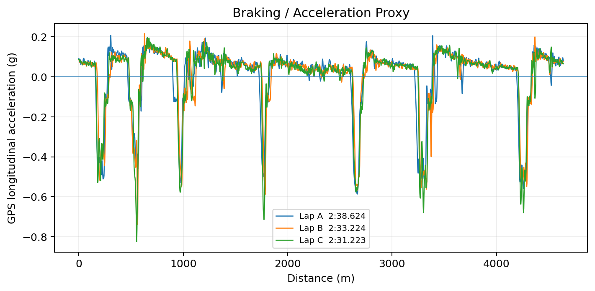
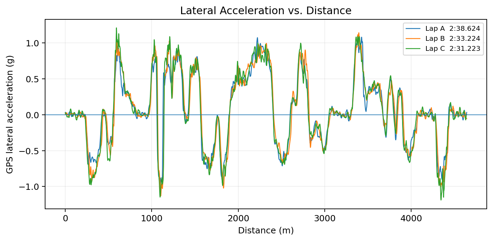
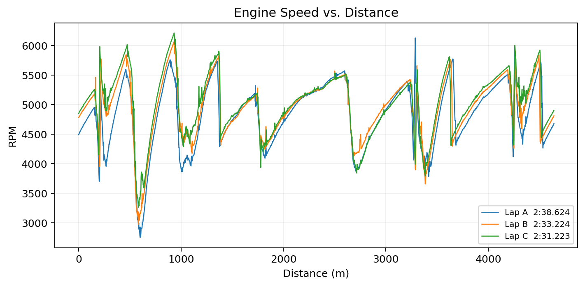

The Question
When I first began driving on a real racetrack, I was interested in a question that went beyond simply becoming faster:
Could I use vehicle telemetry to understand why I was improving—and then use that understanding to make my driving better?
I had spent time practicing in racing simulators, but real driving immediately felt different. The physical forces, braking confidence, tire grip, and consequences of every decision were no longer simulated.
Instead of relying only on how a lap felt, I wanted to measure what was actually happening.
That turned my track day into an engineering experiment.
1. OBSERVE — From Simulation to Reality
My first observation was simple: two laps that felt similar could produce very different lap times.
During my sessions at Buttonwillow Raceway Park, I noticed that I was becoming more comfortable with the car. I could brake with more confidence, carry more speed into some corners, and better anticipate how the car would respond.
But those were subjective impressions.
I wanted objective evidence.
So I began thinking about driving as a dynamic system rather than simply a sport.
The car generates measurable outputs—speed, acceleration, RPM, position, lateral force—and my decisions as a driver influence those outputs.
That led to my research question:
How can vehicle telemetry be used to identify, quantify, and verify improvements in driving performance?
2. MEASURE — Building the Dataset
I recorded my driving using an AiM telemetry system.
For this analysis, I selected three representative laps from three sessions on the same day:
Lap Session Lap Time
A Morning 2:38.624
B Late Morning 2:33.224
C Afternoon 2:31.223
The telemetry included:
GPS speed and position, longitudinal acceleration, lateral acceleration, RPM, calculated gear, and distance around the circuit.
Instead of comparing the laps only by total lap time, I aligned the telemetry by distance traveled around the track.
This allowed me to ask a much more useful question:
At exactly which parts of the track was I gaining or losing time?

3. ANALYZE — Finding the 7.401 Seconds
Between Lap A and Lap C, my lap time improved by:
7.401 seconds
or approximately:
4.67%
Initially, I assumed that becoming faster might mean reaching a much higher maximum speed.
The telemetry showed something different.
My maximum GPS speed changed only from:
140.2 km/h → 142.3 km/h
But my average speed increased from:
105.4 km/h → 110.5 km/h
Even more interesting was minimum speed:
50.6 km/h → 61.3 km/h
This was one of the most important discoveries in the project.
The improvement was not primarily about driving faster on the straights.
It was about losing less speed in the corners.

4. SPEED — Momentum Matters More Than Top Speed
When I overlaid speed against distance, I could see that the fastest lap did not simply have a higher peak.
Instead, its speed trace remained higher through several important low-speed sections.
That changed how I thought about lap time.
A car may spend only a short period near maximum speed, but every unnecessary reduction in corner speed affects not only the corner itself but also the acceleration zone that follows it.
I began to think less about “going faster” and more about preserving momentum.
That is a fundamentally different problem.

5. DELTA TIME — Locating Performance Loss
I then calculated cumulative time difference relative to my fastest lap.
This produced a delta-time trace.
Instead of saying:
“Lap C was 7.401 seconds faster.”
I could now ask:
“Where did those 7.401 seconds appear?”
The largest gains were concentrated in specific areas.
When I divided the approximately 4.64 km lap into ten equal-distance sectors, the first three sectors accounted for approximately:
4.86 seconds of improvement.
The final three sectors contributed approximately another:
2.27 seconds.
The middle of the lap changed relatively little.
In two sectors, my fastest overall lap was actually slightly slower.
That was important because it showed me that a personal-best lap is not necessarily an optimal lap.
There were still measurable weaknesses inside my fastest result.


6. BRAKING — Confidence Can Be Measured
I did not have a brake-pressure sensor, so I could not directly measure pedal force.
Instead, I used negative GPS longitudinal acceleration as a braking proxy.
My peak measured deceleration changed from approximately:
−0.59 g → −0.83 g
The telemetry also showed that I entered several braking zones at higher speeds later in the day.
For example, near one late-lap braking zone, my speed at the deceleration event increased from approximately:
108 km/h → 128 km/h
This suggested that I was becoming more confident about carrying speed toward the braking zone and managing the transition into the corner.
But I also learned an important lesson about engineering analysis:
Do not claim more than the sensor actually measured.
Without brake-pressure data, I cannot prove exactly how hard I pressed the pedal or precisely how I released the brake.
Telemetry is powerful only when its limitations are respected.

7. CORNER SPEED — My Biggest Discovery
One of the clearest improvements occurred around a major slow-speed section approximately 0.61 km into the lap.
My minimum speed increased from approximately:
50.9 km/h → 61.3 km/h
Across the surrounding analysis window, this represented approximately:
1.40 seconds of improvement.
Similar gains appeared around other major speed minima.
This helped me understand something that simulator practice alone had not fully taught me:
The fastest corner is not necessarily the corner with the latest braking point.
The entire sequence matters:
Entry → rotation → minimum speed → exit → acceleration
Optimizing only one part can damage another.
8. VEHICLE DYNAMICS — Learning to Use the Grip Envelope
Another measurable change appeared in lateral acceleration.
Peak absolute lateral acceleration increased from approximately:
1.09 g → 1.21 g
This did not mean that every corner should be driven at maximum lateral acceleration.
Instead, it suggested that as I gained experience, I became more comfortable operating closer to the available tire-road grip envelope in selected parts of the track.
At the same time, my stronger longitudinal deceleration showed that I was also becoming more comfortable using the car dynamically during braking.
This introduced me to a concept I want to study more deeply:
The tire has a finite amount of available grip, and braking, cornering, and acceleration compete for that capability.
Driving began to look less like a sequence of instincts and more like an applied vehicle-dynamics problem.

9. RPM AND GEAR — Same Car, Different Result
The car itself did not suddenly become more powerful during the day.
My maximum RPM remained in approximately the same range, around 6,100–6,200 rpm.
The telemetry indicated that I drove almost the entire lap in third and fourth gear.
On my fastest lap, approximately:
45% was spent in 3rd gear
55% was spent in 4th gear
This strengthened my interpretation of the data.
The 7.401-second improvement was not the result of a major change in engine performance.
It came from using the same vehicle more effectively.

10. HYPOTHESIZE — Turning Data into a Theory
After comparing the three laps, I developed a hypothesis:
Most of my improvement came from preserving momentum through selected low-speed sections and improving the transitions between braking, cornering, and acceleration—not from increasing straight-line speed.
The evidence supported this:
Maximum speed increased only about 1.5%.
Lap time improved about 4.7%.
Minimum speed increased about 21%.
Peak lateral acceleration increased about 12%.
The variables that changed most strongly were associated with cornering and vehicle dynamics rather than engine performance.
11. MODIFY — Changing the Driver
The next step was not to modify the car.
It was to modify myself.
I focused on approaching selected corners with greater confidence, avoiding unnecessary speed reduction, making smoother transitions, and preserving momentum through the corner sequence.
This changed my relationship with the telemetry.
The data was no longer something I examined after driving.
It became part of a feedback loop:
Drive → Measure → Analyze → Change → Drive Again